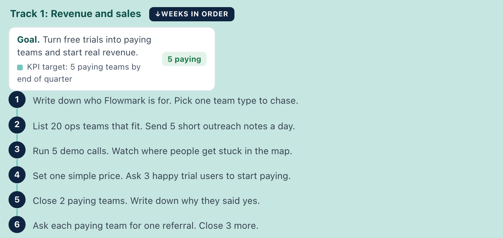
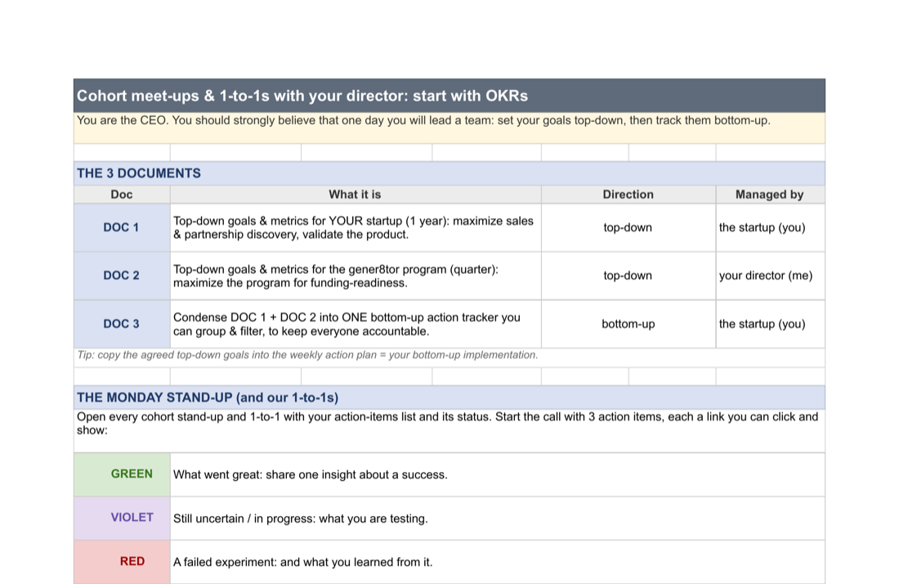
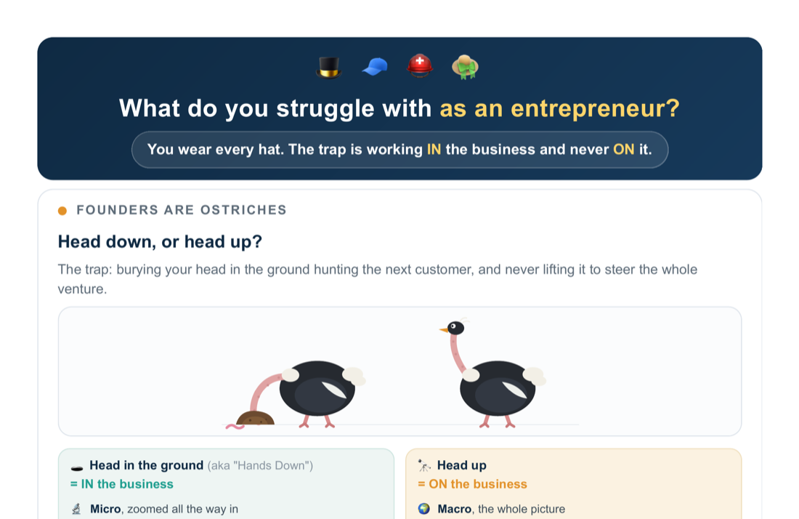
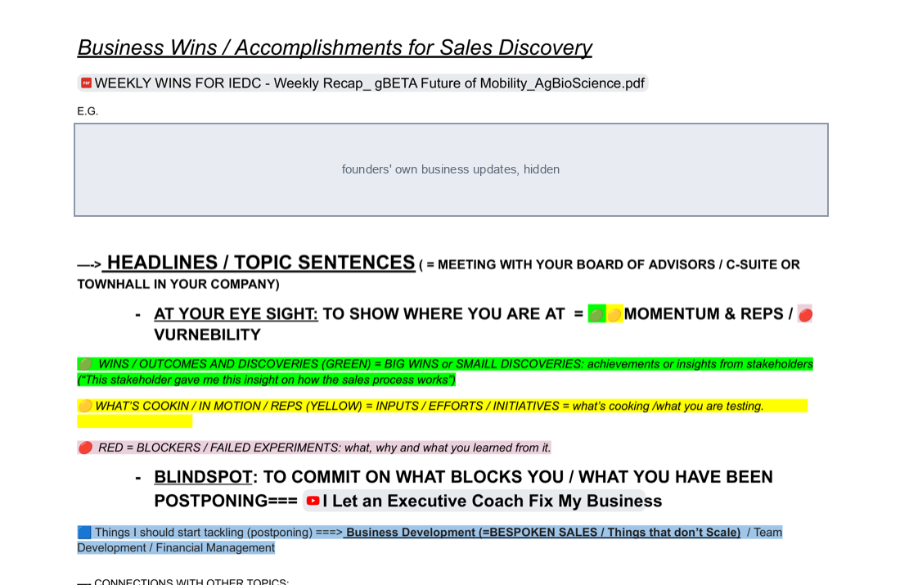

Weekly action plans
Write plans from notes→ AI drafts seven weeks of priorities

Screenshot ↗Director of Accelerator Programs · gener8tor
I coach founders, arrange investor introductions, and build tools for program teams.

rScanFounder reports revenue grew from $720K to $1.8M.
Covert DefensesWrote a plan to bring research to market. Company received a $1M federal award.
Vertikal XIntroduced US partners; the company relocated to Indiana.
AI projects
Usual approach → What changes. AI features are labeled. Private details hidden or replaced.
Write plans from notes→ AI drafts seven weeks of priorities

Screenshot ↗Separate goal and task sheets→ Tool connects goals to weekly actions

Screenshot ↗List business problems→ Guide helps choose the first priority

Screenshot ↗Read profiles individually→ AI suggests guests for your question
 Screenshot ↗
Screenshot ↗Browse template folders→ AI suggests a document for your need
 Screenshot ↗
Screenshot ↗Rewrite each introduction→ Template fills in founder details for review
 Screenshot ↗
Screenshot ↗Search investor email threads→ Tool groups unanswered invitations
 Screenshot ↗
Screenshot ↗Re-read your inbox→ Tool groups replies by next action
 Screenshot ↗
Screenshot ↗Read scattered onboarding emails→ Tool combines schedule and preparation
 Screenshot ↗
Screenshot ↗Hunt through deadline emails→ Tool links tasks, dates, and templates
 Screenshot ↗
Screenshot ↗Timetable plus stopwatch→ Tool shows assignments and countdown together
 Screenshot ↗
Screenshot ↗Count available meeting places→ Tool shows each session’s capacity
Compare invite and signup lists→ Check matches registrations before reminders
Read unstructured updates→ Template separates wins, blockers, and help needed

Screenshot ↗Collect progress emails→ Tool puts company updates in one report
 Screenshot ↗
Screenshot ↗Keep separate company notes→ Tool puts updates beside support needs
 Screenshot ↗
Screenshot ↗Find customersTest customer needs and plan outreach.
Build the businessSet weekly goals and review progress.
Prepare for fundingPlan milestones and introduce relevant investors.